Style board · Metropolis
The city, under a sky
Reference stills, the palette pulled from them, and the rules the renderers follow. The WebGL view is the primary look now; the Canvas 2D views keep the same sky as a flat fallback.
prototypes/metropolis.html
prototypes/hero.html
docs/refs/
The 3D view
Built on three.js because the stills need what a flat painter cannot give: modelled chibi buildings and characters, thin bevelled plinths on faceted terrain, raked soft shadows with contact darkening, ambient occlusion, depth of field, bloom, and a camera you can drag around the city. Every colour goes in as linear light, which is what keeps the pastels saturated instead of pale.
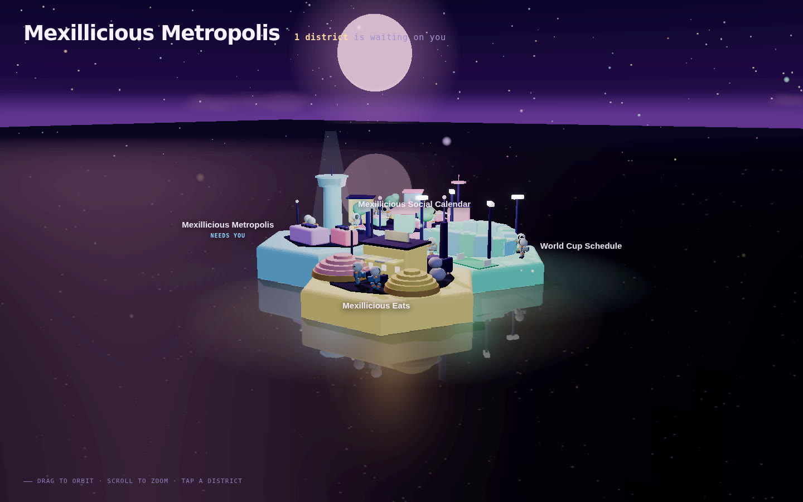
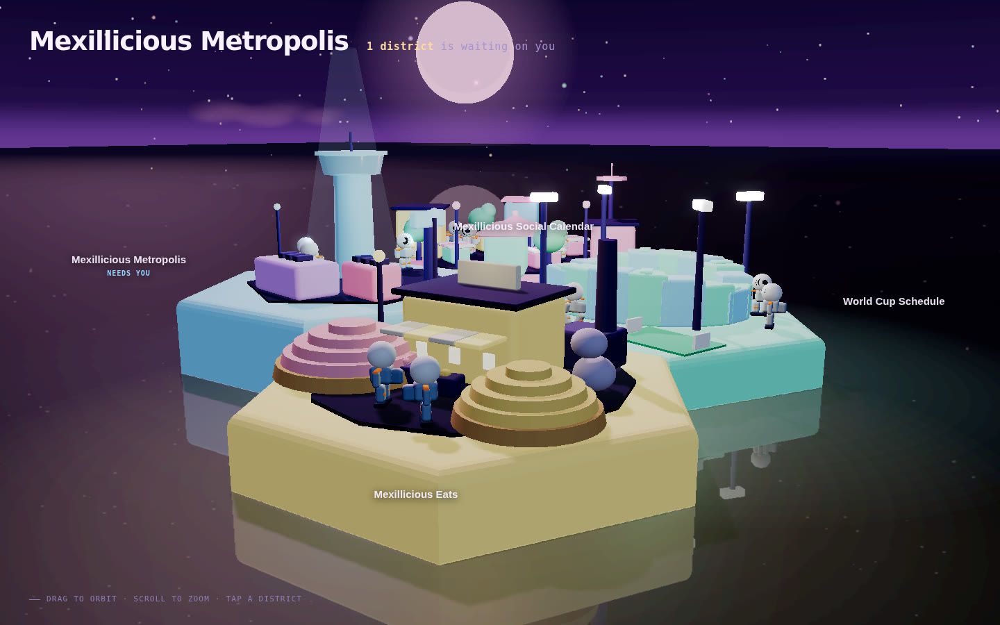
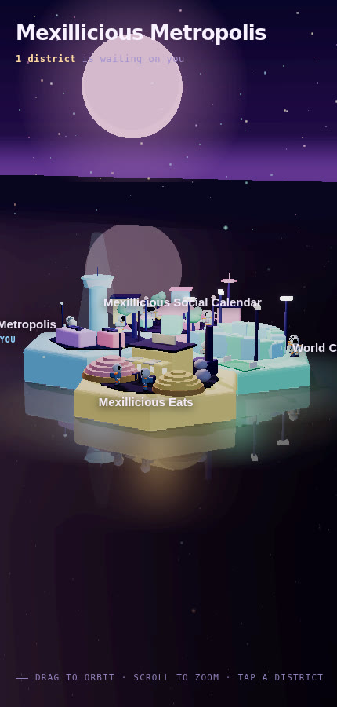
What changed in the flat views
Before, a flat purple disc filled the frame and the sky was a strip along the top edge. Now there is a horizon, two moons, a cloud bank, and a dark floor that the districts glow onto.
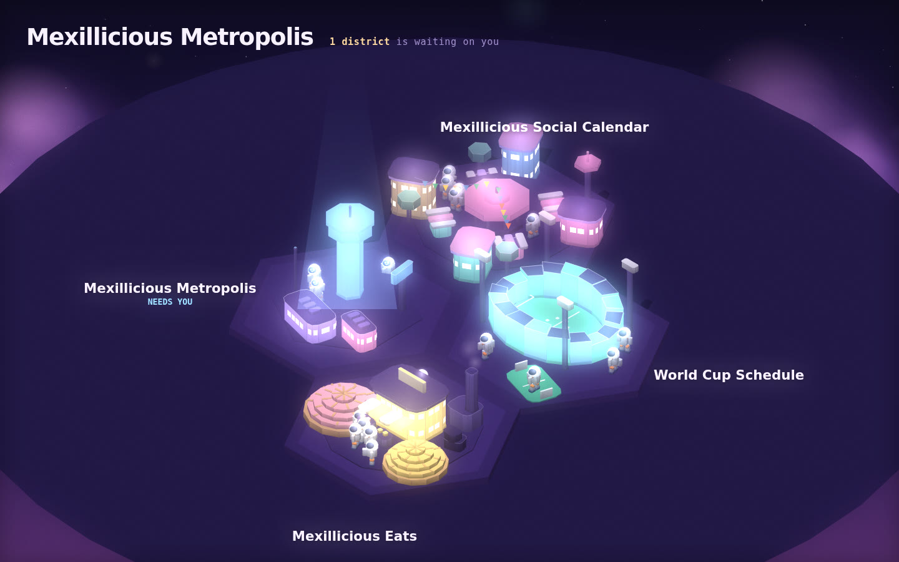
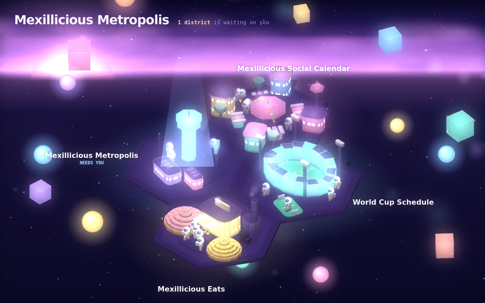
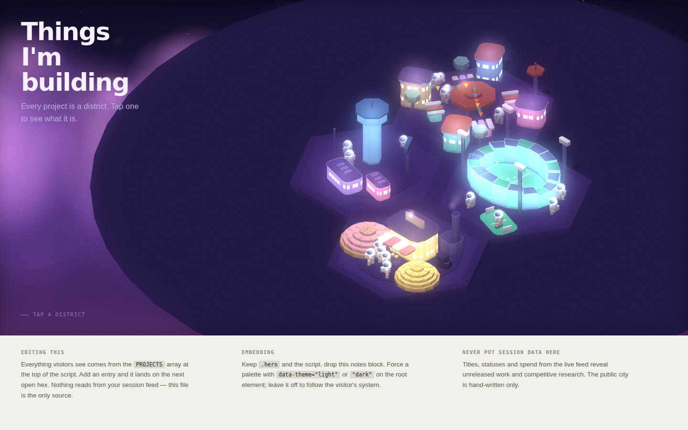
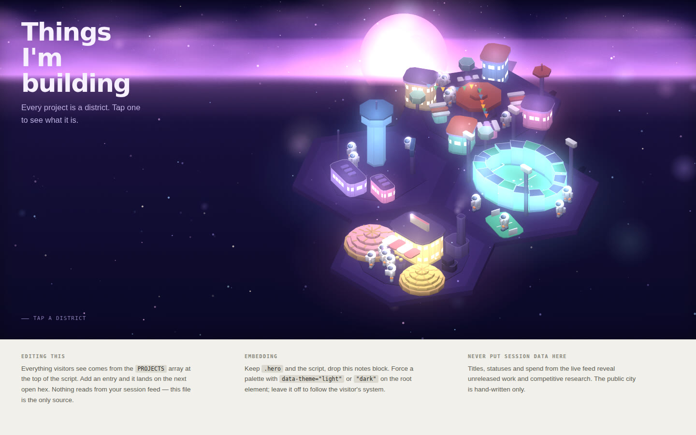
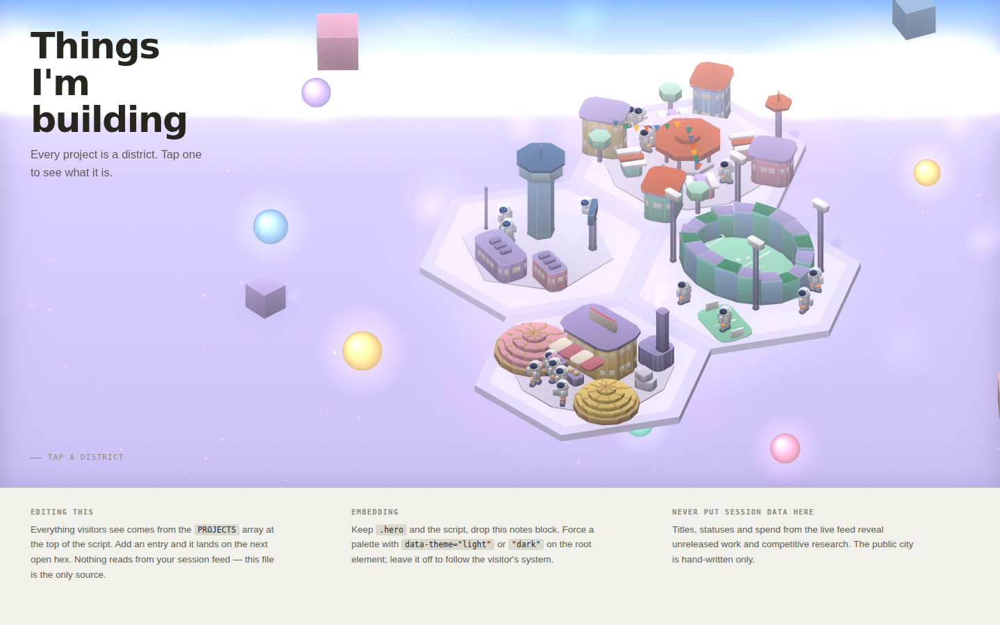
The stills that set the look
Three ideas repeat in all of them: pastel cubes as architecture, a sky with bodies in it, and tiny inhabitants that make the blocks read as huge. The floating cubes and orbs in the stills were tried and rejected; the sky keeps only the moons, stars and clouds.

docs/refs/ref-night-plaza.jpgsave the still here and it appears
docs/refs/ref-canyon-road.jpgsave the still here and it appears
docs/refs/ref-cube-field.jpgsave the still here and it appearsThe three stills arrived as chat attachments, not files, so they are not in the repository yet. Save them under the names shown and they render in place.
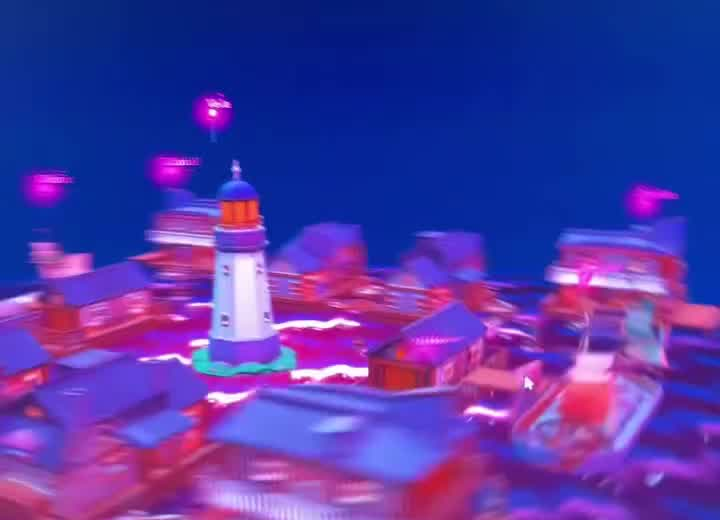
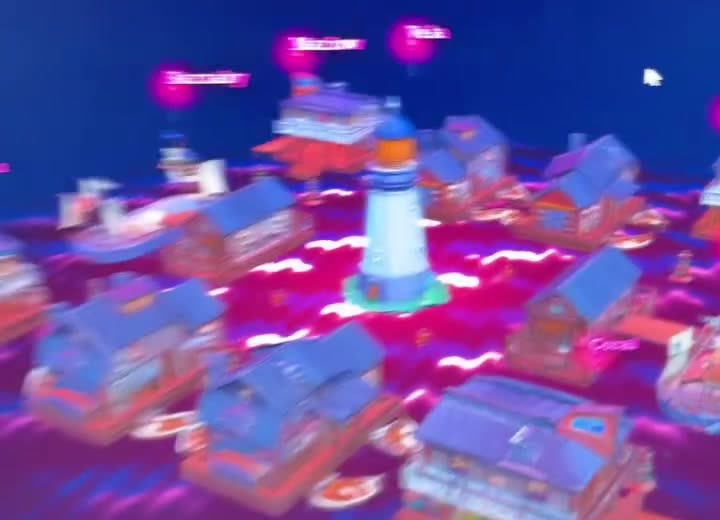
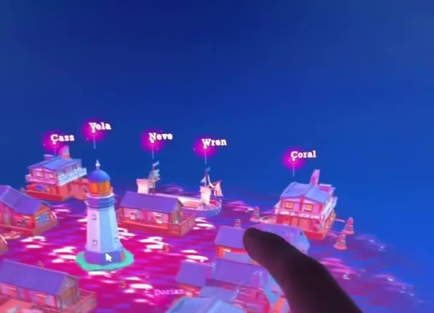
Two darks, six pastels
The darks are ground and sky. The pastels are only ever emitted light: walls, moons, the horizon glow. Nothing is painted pastel and then lit. These are the night palette values in PALETTES.night.
#06051AskyTop#1A1140skyMid#4B2B70skyLow#8E5FB0horizon, plus a pink glow band#120D2CfloorFar, fades to floorDeep#171130the pool under the city#FF9ECBwalls[0], big moon#7EF0D0walls[1]#FFE08Awalls[2], small moon#8FD4FFwalls[3]#C7A6FFwalls[4], clouds#FFB59Awalls[5]Rules of the sky
What the renderer does now, in draw order, so the real build keeps matching it.
- Horizon
- A screen-space line
HZ, placed just above the top of the ground pool and clamped between 22% and 78% of the height. Everything about the sky hangs off it.The horizon is what makes it a sky instead of a black room. - Gradient
- Zenith to sky to low sky to the horizon colour, then a soft 3.5% blend into the far floor, which darkens toward the bottom edge.
- Stars
- 380 in the top 82% of the frame, culled below the horizon. Half white, the rest tinted pink, ice or butter. They twinkle unless reduced motion is on.
- Moons
- Two, never the same size, from
P.moons: a big pink one with four faint maria and a small butter one. Each has an additive halo. They are drawn before the floor so they can set behind it. - Glow band
- An additive pink band centred on the horizon, 16% of the height above it and 14% below, peaking at 22% opacity. It is what softens the line and lights the floor near the edge.
- Clouds
- Three bands of flattened radial blobs hugging the horizon from above, at 16 to 46% opacity, drifting slowly. Thin enough that the moon still reads through them.
- Ground
- One elliptical pool, radius 8.4, solid to 58% then fading to transparent over the far floor. Under it, each district lays its accent on the floor at 20% opacity, additive.Fading the pool is what removed the disc edge that used to cut the frame in half.
- Dust
- 170 pastel points drifting upward through the whole frame, drawn after the solids so they sit in the air in front of the city. Off in the day palette apart from a trace.
- Day
- Same code, different keys. Blue zenith, pale horizon at 28% glow, lilac far floor, one small pale moon, no stars, dust turned down.
Rules of the material, 3D view
- Sugar
- One material for everything pastel: the accent as colour and as emissive at about a quarter strength, roughness above 0.9, a fine noise bump.
sugar(colour, emit, rough)in the file.Emissive plus bloom is what reads as lit from within. - Edges
- No sharp box anywhere. Buildings use rounded boxes; plinths and stadium stands are extruded shapes with a bevel. The bevel is what catches the moonlight on every top edge.
- Plinths
- Each district is a thin bevelled hex slab in its own accent, 12 to 22 hundredths high so the step between neighbours is a border and nothing more, with its colour pooled on the ground beneath and a point light above.
- Ground
- Uninhabited terrain, never water. Flat for eleven units around the city, then faceted low-poly hills from simplex noise, mountains from fifty units out, pebbles near and dodecahedron outcrops far. Lambert, because a standard material shows a sheen under the low moon.
- Models
- Kenney's CC0 city, platformer and racing pieces, packed into
models.jsbytools/pack-models.pyso the file still opens from disk. Every placement in the city is a named slot inMODEL_MAP; a slot names a model, a scale and a turn, or stays null and keeps the hand-built version. Every model is tinted in the shader, a third of the way to white with a little self-glow, so saturated kit colours sit in the palette. - Cadets
- Kenney's robot at 60% scale, driving its own idle and walk clips along the same deterministic routes as the 2D views. The alert face is still a sprite over the visor.
- Shadows
- The moon rakes in from the left at about thirty degrees so every block throws a long shadow; VSM shadow map, blur radius 6. A multiply contact blob under every block, cylinder, model and cadet does the rest.
- Passes
- SSAO for creases, then a bokeh depth-of-field pass focused on the orbit target, then bloom.
?ao=0and?dof=0switch them off for comparison. - Light
- A pink moon key light, an ice fill from the other side, a low lilac hemisphere. Emissive on pastel surfaces is kept low so shadows are not filled in; bloom carries the glow.
- Colour
- Hex values are sRGB and are converted to linear on the way in. Skip that and the whole city renders washed out.
- Camera
- Orbit with damping, no pan, distance 11 to 48, polar angle 26° to 83°. Slow auto-rotate unless reduced motion is on.
Deliberately not touched
The district kits keep their hand-composed layouts in both renderers. The rules that used to forbid a CDN and a moving camera were dropped; the ones below still hold.
Krea prompt for new stills
Use with the three stills as a moodboard. It names the same rules the renderer follows, so new frames stay on the board.
Miniature pastel city at night made of glowing translucent sugar-cube blocks in pink, mint, butter yellow, ice blue and lilac, arranged on a dark slightly reflective floor. Tiny toy astronaut figurines walk between the blocks. Night sky with a large soft pink moon upper left and a small yellow moon on the right, scattered stars, a thin band of lilac clouds at the horizon, drifting sparkle dust. Nothing floating in the air. Each block emits its own colour with a pool of light beneath it. Matte tactile textures, cinematic wide shot, 21:9, shallow depth of field, stop-motion diorama feel.
Negative direction: no floating cubes or spheres, no neon signage, no chrome, no photoreal humans, no single-colour rim light, no black void behind the city.